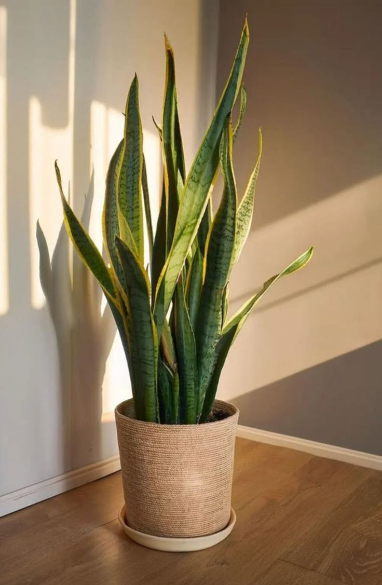
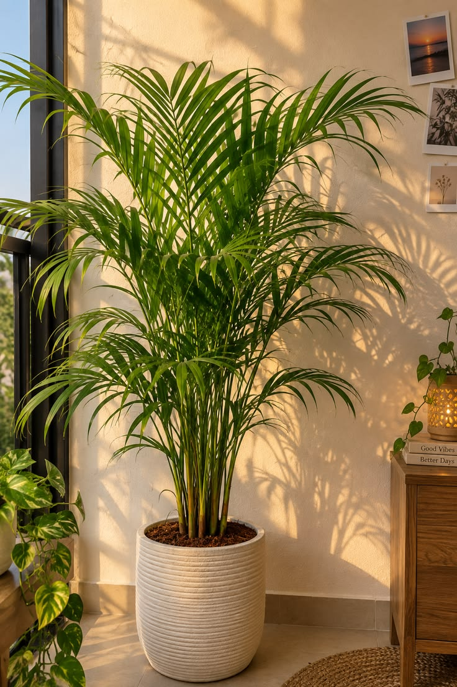
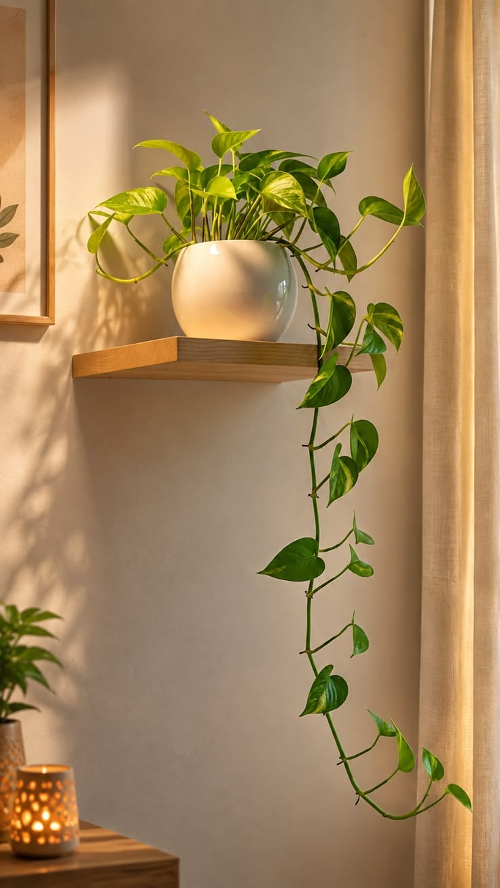

Выбор Листвы
Выбор ЛиствыКрупные растения
Монстера делициоза
Крупные резные листья и выразительный силуэт. Зелёный акцент для светлого уголка гостиной.
3 490 ₽ 3 990 ₽
Зелёная коллекция / 06 растений
Зелёный акцент для целой комнаты.
Выбор ЛиствыКрупные растения
Крупные резные листья и выразительный силуэт. Зелёный акцент для светлого уголка гостиной.
3 490 ₽ 3 990 ₽
 Новый лист
Новый листКрупные растения
Плотные глянцевые листья глубокого зелёного цвета. Для спокойного, собранного интерьера.
2 890 ₽
Подробнее ↗Для первого знакомства с растениями.
 Для начинающих
Для начинающихПростые в уходе
Графичные ветви и плотные листья. Хороший первый шаг в домашнее озеленение.
2 490 ₽
Подробнее ↗
Простой уходПростые в уходе
Вертикальные листья с тонкой светлой каймой. Компактная зелень для рабочего стола.
1 990 ₽
Подробнее ↗Найдут своё место даже на небольшой полке.

Мягкий силуэтКомпактные растения
Небольшая пальма с лёгкими перистыми листьями. Добавляет пространству мягкости.
2 290 ₽
Подробнее ↗
На полкуКомпактные растения
Вьющиеся побеги и сердцевидные листья. Для полки, стеллажа или подвесного кашпо.
1 490 ₽
Подробнее ↗